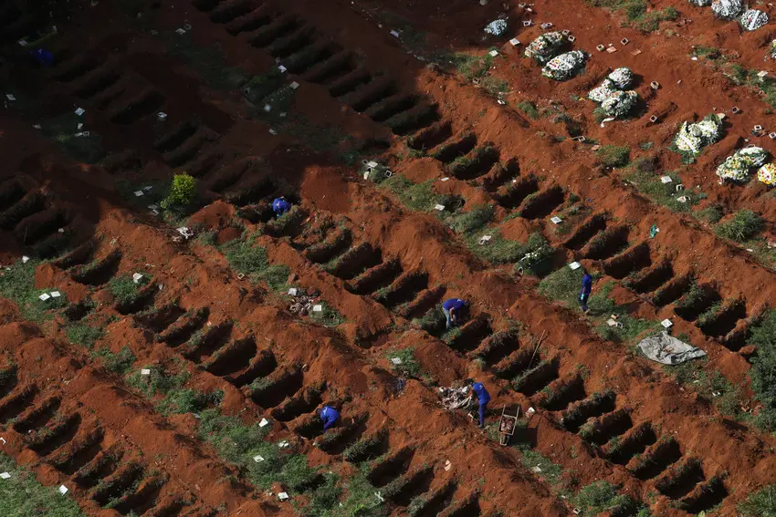

The only way to protect yourself and your family is through vaccination
Continue readingThe Origins of the deadly Virus
The current COVID-19 pandemic is caused by a coronavirus named SARS-CoV-2. Coronaviruses (CoVs) are a large family of viruses, several of which cause respiratory diseases in humans, from the common cold to more rare and serious diseases such as the Severe Acute Respiratory Syndrome (SARS) and the Middle East respiratory syndrome (MERS), both of which have high mortality rates and were detected for the first time in 2003 and 2012, respectively. CoVs are divided into four genera: alpha-, beta-, gamma- and delta-CoV. All CoVs currently known to cause disease in humans belong to the alpha- or the beta-CoV. Many of these CoVs can infect several animal species as well. SARS-CoV infected civet cats and infected humans in 2002 and MERS-CoV is found in dromedary camels and infected humans in 2012. A virus that is regularly transmitted from an animal to a human is called a zoonotic virus. When a virus passes from animals to humans for the first time it is called a spillover event. When a new virus is discovered, it is important to understand where it comes from. This is critical to be able to identify and isolate the source and prevent further introductions of the virus into the human population. It also helps to understand the dynamic of the beginning of the outbreak, which can be used to inform the public health response. Understanding the origin of the virus may also aid the development of therapeutics and vaccines. To identify the source or origin of a virus, it is helpful to look at the genetic makeup of the virus and see whether it resembles other known viruses. This may provide some clues as to its origin. Viruses that are genetically closely linked tend to come from a similar source or similar geographic area. SARS-CoV-2, the virus responsible for COVID-19, belongs to a group of genetically related viruses that includes SARS-CoV and a number of other CoVs isolated from bat populations. MERS-CoV also belongs to this group but is less closely related. It is also necessary to investigate and interview in depth the first known human cases of the disease for indications as to where they may have become infected. This may help identify earlier possible cases and narrow the geographical areas and timeframes so that more specific investigations could be performed to identify the source. Currently, the zoonotic source of SARS-CoV-2 is unknown. The first human cases of COVID-19, the coronavirus disease caused by SARS-CoV-2, were first reported from Wuhan City, China, in December 2019.
Are Viruses always harmful to humans
There are 219 virus species that are known to be able to infect humans. The first of these to be discovered was yellow fever virus in 1901, and three to four new species are still being found every year. Extrapolation of the discovery curve suggests that there is still a substantial pool of undiscovered human virus species, although an apparent slow-down in the rate of discovery of species from different families may indicate bounds to the potential range of diversity. More than two-thirds of human viruses can also infect non-human hosts, mainly mammals, and sometimes birds. Many specialist human viruses also have mammalian or avian origins. Indeed, a substantial proportion of mammalian viruses may be capable of crossing the species barrier into humans, although only around half of these are capable of being transmitted by humans and around half again of transmitting well enough to cause major outbreaks. A few possible predictors of species jumps can be identified, including the use of phylogenetically conserved cell receptors. It seems almost inevitable that new human viruses will continue to emerge, mainly from other mammals and birds, for the foreseeable future. For this reason, an effective global surveillance system for novel viruses is needed.

History says that there is a constant resurgence of diseases trying to wipe-out humanity
Intermittent outbreaks of infectious diseases have had profound and lasting effects on societies throughout history. Those events have powerfully shaped the economic, political, and social aspects of human civilization, with their effects often lasting for centuries. Epidemic outbreaks have defined some of the basic tenets of modern medicine, pushing the scientific community to develop principles of epidemiology, prevention, immunization, and antimicrobial treatments. This chapter outlines some of the most notable outbreaks that took place in human history and are relevant for a better understanding of the rest of the material. Starting with religious texts, which heavily reference plagues, this chapter establishes the fundamentals for our understanding of the scope, social, medical, and psychological impact that some pandemics effected on civilization, including the Black Death (a plague outbreak from the fourteenth century), the Spanish Flu of 1918, and the more recent outbreaks in the twenty-first century, including SARS, Ebola, and Zika.